🔬 L05: Lab 2 – Creating a Screen Profile and Layout
Based on Module 2 — Getting Started: Lab 2 (pages 2-27 through 2-52)
Lab Overview: In this lab, you will create graphic toolsets on the Graphics tab for organizing out-of-the-box items, create two screen profiles, build and configure a three-pane layout with one slide-in pane, and assign OMI Apps to panes. The configurations created here will be viewable in a running ViewApp in later labs.
Content Workflow Highlight: This lab focuses on assigning content directly to layout panes — a key technique for structuring ViewApp content before building the ViewApp itself.
Objectives
Upon completion of this lab, you will be able to:
Create a toolset
Create a screen profile
Create a layout with multiple panes
Configure pane properties
Add and configure a slide-in pane
Search for content in the Layout Editor
Assign OMI Apps to panes
Part 1: Create Graphic Toolsets
Source: pages 2-28 to 2-33
You will create three graphic toolsets on the Graphics tab: one for Apps, one for .NET controls, and one for organizing graphic items created in this course.
Step 1: Create the Apps Toolset
1. On the Graphics tab, right-click TrainingGalaxy and select New → Graphic Toolset.
A new graphic toolset with the default name is created on the Graphics tab.
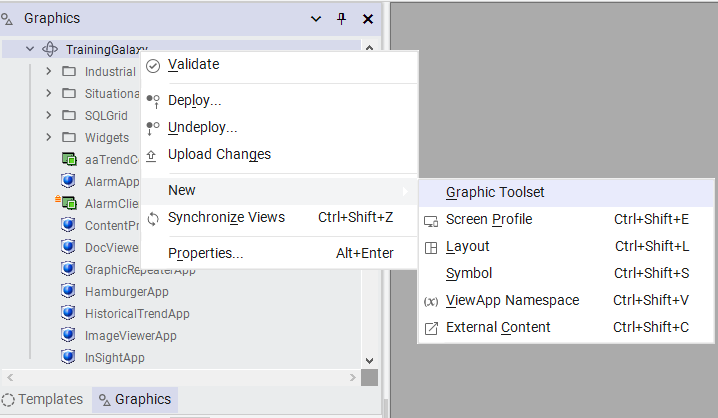
Right-click TrainingGalaxy on the Graphics tab and select New → Graphic Toolset from the context menu.
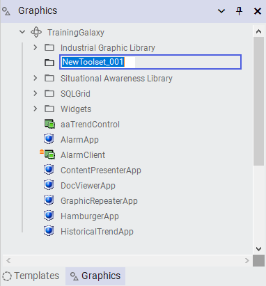
A new graphic toolset appears under Industrial Graphic Library with the default name.
2. Rename the new toolset to Apps.
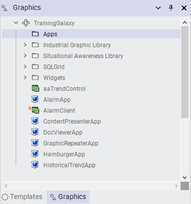
The toolset renamed to "Apps" — now ready to receive OMI App items.
3. On the Graphics tab, select the following items and drag them to the Apps toolset:
All 14 OMI App items dragged into the Apps toolset, ready for use in layouts.
Step 2: Create the .NET Controls Toolset
4. On the Graphics tab, right-click TrainingGalaxy again and select New → Graphic Toolset.
5. Rename the new toolset to .NET Controls.
6. Select and drag aaTrendControl, AlarmClient, and TrendClient into the .NET Controls toolset.
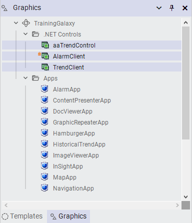
The .NET Controls toolset (expanded) alongside the Apps toolset, both organized under TrainingGalaxy.
Step 3: Create the Training Toolset
7. Right-click TrainingGalaxy and select New → Graphic Toolset.
8. Rename the new toolset to Training.
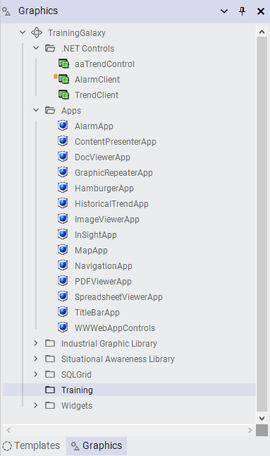
The Training toolset created to organize course-specific graphic items.
Part 2: Create Screen Profiles
Source: pages 2-33 to 2-38
Step 4: Create the Screen Profiles Sub-Toolset
9. Right-click the Training toolset and select New → Graphic Toolset.
10. Rename the new toolset to Screen Profiles.
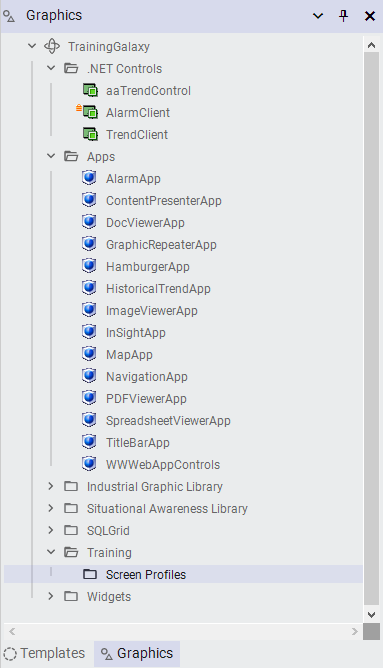
The Screen Profiles sub-toolset created under Training for organizing screen profiles.
Step 5: Create the SingleScreen Profile
11. Right-click the Training → Screen Profiles toolset and select New → Screen Profile.
12. Rename the new screen profile to SingleScreen.
13. Double-click SingleScreen to open it in the Screen Profile Editor.
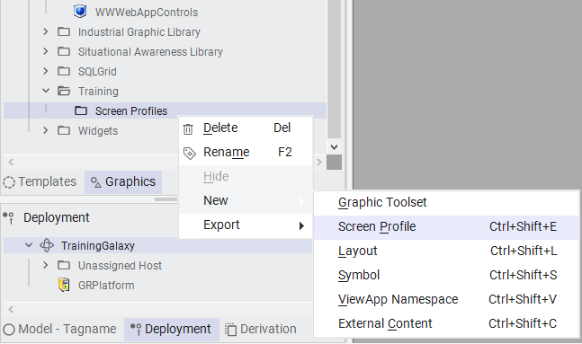
Right-click the Screen Profiles toolset and select New → Screen Profile to create a new profile.
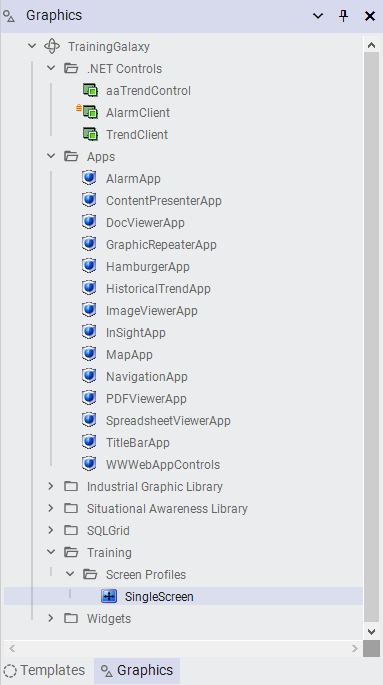
The SingleScreen profile in the Screen Profile Editor: a single Primary screen at 1920×1080, Landscape orientation.
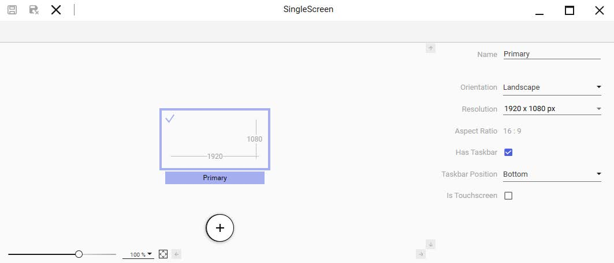
Default screen properties: Name "Primary," Landscape orientation, 1920×1080 resolution, taskbar enabled at bottom.
14. Review the configuration, but leave all the default settings.
15. Click Close to close the Screen Profile Editor.
Step 6: Create the DualScreen Profile
16. Right-click Training → Screen Profiles and select New → Screen Profile.
17. Rename the new screen profile to DualScreen.
18. Double-click DualScreen to open it in the Screen Profile Editor.
19. Click Add Screen to add a second screen to the profile.
20. Ensure Screen1 is selected, and in the Name property, rename the screen to Secondary.
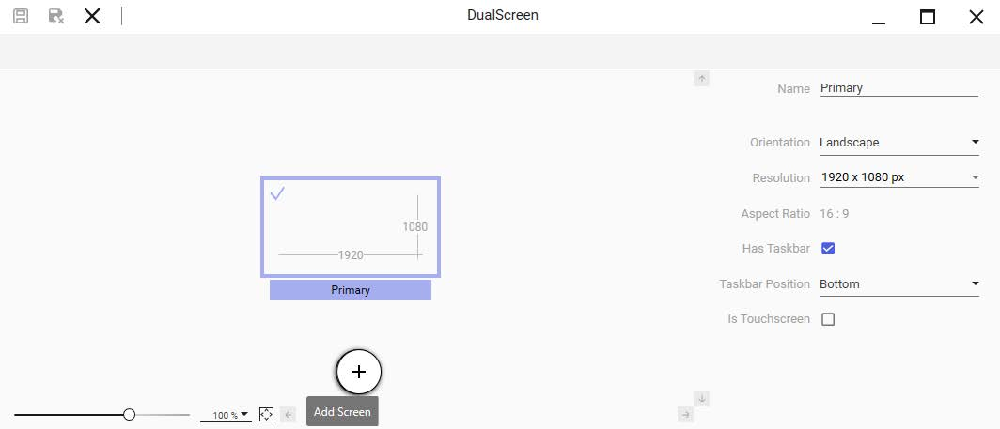
Click the Add Screen button to add a second monitor to the DualScreen profile.
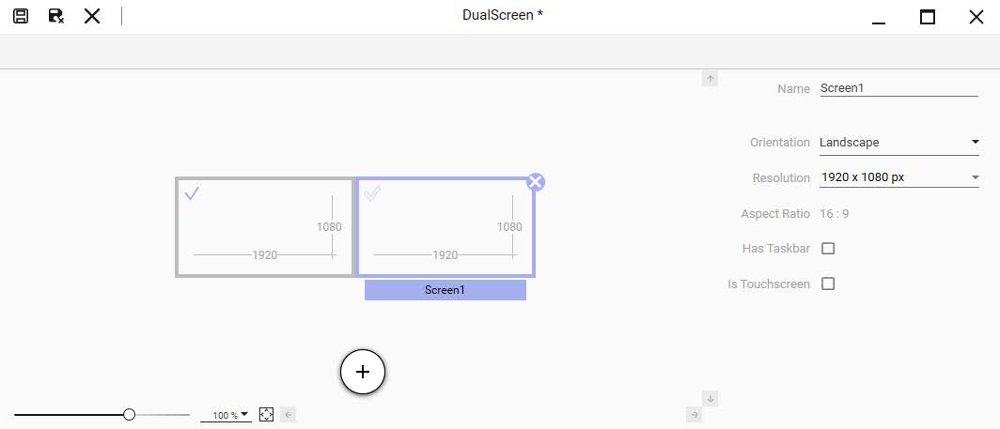
After adding Screen1 — a second 1920×1080 screen appears to the right of the Primary screen.
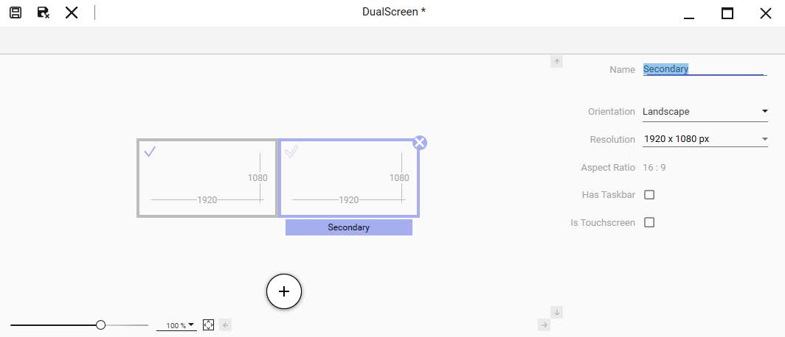
The second screen renamed to "Secondary" — the DualScreen profile now has two named screens.
21. Click Save and Close to save and close the DualScreen screen profile.
22. Click Check-in to check in the DualScreen screen profile.
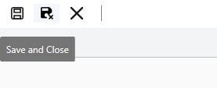
Click Save and Close to save the DualScreen profile, then check it in when prompted.
Part 3: Create the Layout
Source: pages 2-39 to 2-42
Step 7: Create the Layouts Sub-Toolset and Layout
23. Right-click the Training toolset and select New → Graphic Toolset.
24. Rename the new toolset to Layouts.
25. Right-click the Training → Layouts toolset and select New → Layout.
26. Rename the new layout to Main.
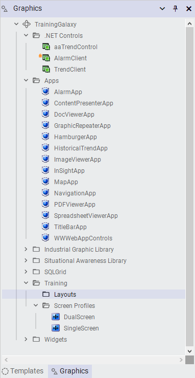
The Layouts sub-toolset created under Training, ready to hold the Main layout.
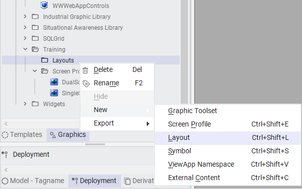
Right-click the Layouts toolset and select New → Layout to create the Main layout.
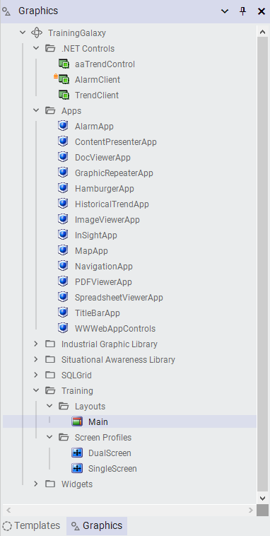
The layout renamed to "Main" in the Layouts toolset.
27. Double-click Main to open it in the Layout Editor.
28. In the top-right corner of the editor, click Maximize to maximize the editor window to full screen.
29. At the bottom of the editor, click Zoom to Fit to maximize the layout preview.
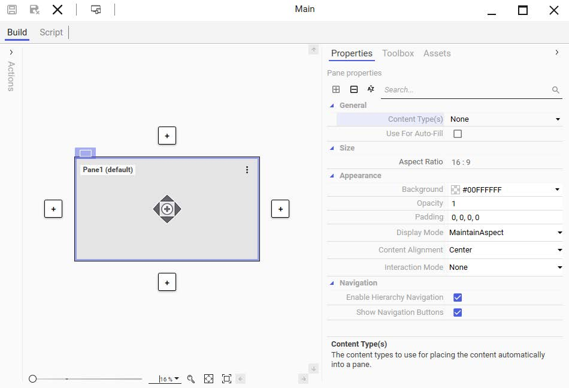
The Layout Editor opens with a single Pane1 (default). The Properties tab shows General, Size, Appearance, and Navigation settings.
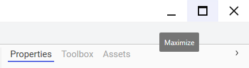
Click the Maximize button in the top-right corner to expand the Layout Editor to full screen.
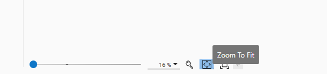
Click Zoom to Fit in the bottom toolbar to maximize the layout preview within the editor.
Part 4: Configure Panes
Source: pages 2-43 to 2-46
Step 8: Add Pane2 Above Pane1
30. In the layout preview area, select Pane1.
31. Click the Add new pane up-arrow to add a new pane above Pane1.
A new pane named Pane2 is added above Pane1.
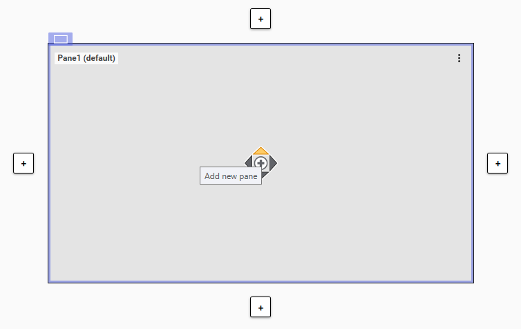
Select Pane1 and click the Add new pane up-arrow to create Pane2 above it.
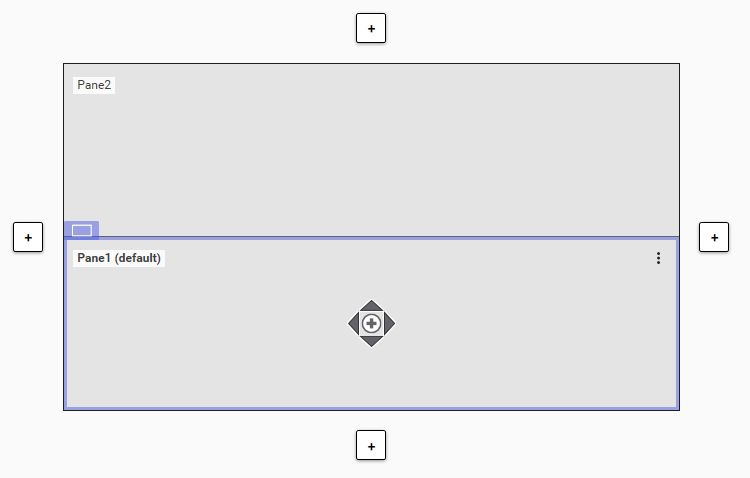
After adding Pane2: two stacked panes with Pane2 at the top and Pane1 (default) at the bottom.
Step 9: Resize Pane2
32. Select Pane2, and on the Properties tab, change the Size → Height property to 100 and press Enter.
Pane2 is resized to 100 px in the layout preview area.
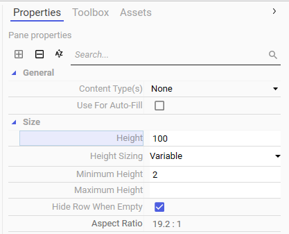
Set the Height property to 100 pixels to make Pane2 a thin horizontal bar at the top of the layout.
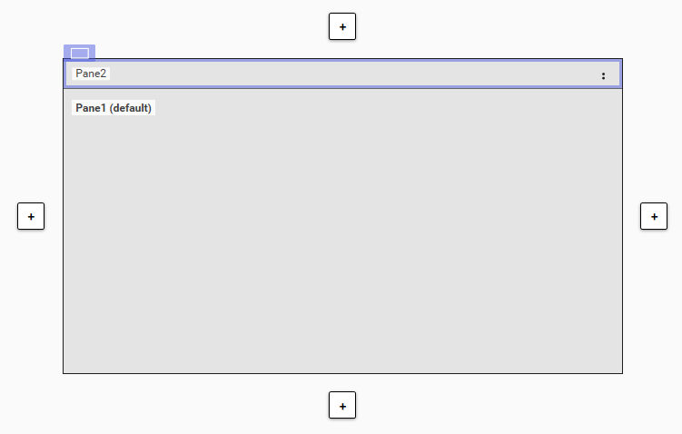
Pane2 resized to 100px — now a narrow horizontal bar above the larger Pane1.
Step 10: Add a Slide-In Pane
33. On the left side of the layout, click the Add Slide-In Pane button.
A slide-in pane named Pane3 is added on the left side of the layout.
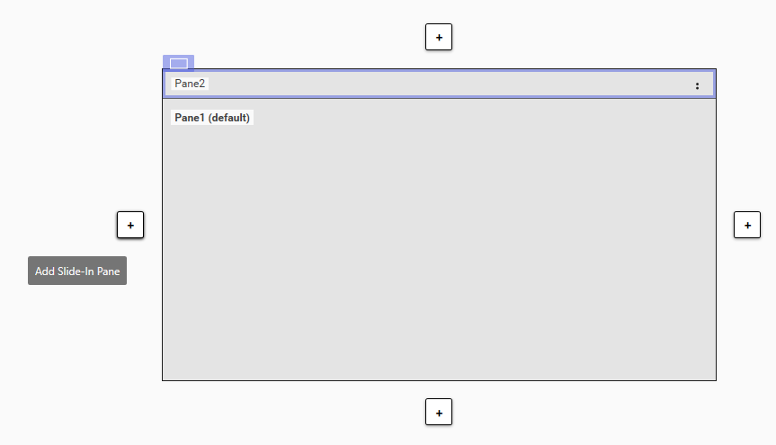
Click the Add Slide-In Pane button on the left edge of the layout to create a collapsible side panel.
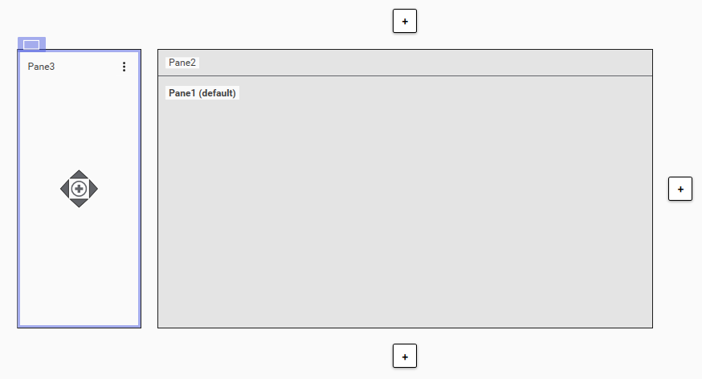
Pane3 added as a slide-in pane on the left — a narrow vertical panel that slides in at runtime.
Part 5: Assign Content to Panes
Source: pages 2-46 to 2-51
Step 11: Search for Navigation Controls
34. On the right side of the Layout Editor, select the Toolbox tab.
35. In the Search field, enter nav.
Multiple items are found, including NavBreadcrumbControl and NavTreeControl.
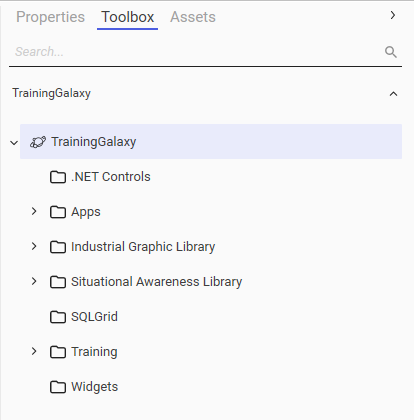
Select the Toolbox tab on the right side of the Layout Editor. The Search field at the top helps locate content quickly.
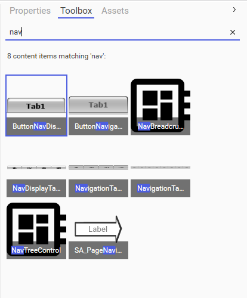
Searching for "nav" reveals 8 matching items. The two key controls are NavBreadcrumbControl and NavTreeControl from NavigationApp.
Tip: Rather than searching, you can alternatively expand Training → Apps on the Toolbox tab to find the NavigationApp.
Step 12: Drag Controls to Panes
36. From the Toolbox tab preview area, drag NavBreadcrumbControl to Pane2.
37. From the Toolbox tab preview area, drag NavTreeControl to Pane3.
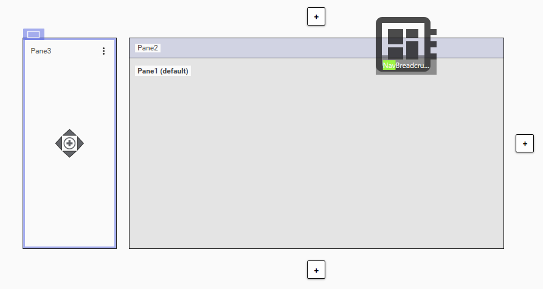
Drag NavBreadcrumbControl from the Toolbox preview area onto Pane2. Panes highlight as you drag to indicate drop targets.
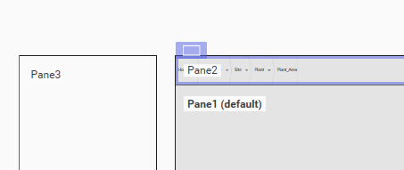
NavBreadcrumbControl previewed in Pane2 — shows the breadcrumb navigation path.
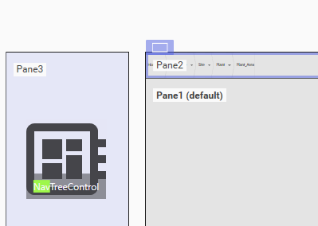
Drag NavTreeControl from the Toolbox preview area onto Pane3 (the slide-in pane).
The completed layout: Pane3 (slide-in sidebar with NavTreeControl), Pane2 (top bar with NavBreadcrumbControl), and Pane1 (main content area).
Step 13: Configure Content Types for Pane1
38. In the layout preview area, select Pane1.
39. On the Properties tab, click the drop-down arrow for the Content Type(s) property.
40. Check the Overview content type.
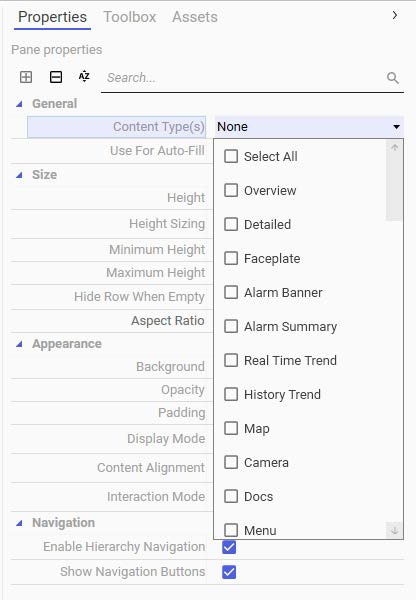
The Content Type(s) dropdown shows all available types. By default, no types are checked (None).
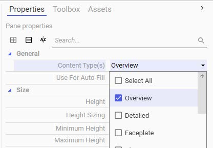
After selecting "Overview" as the content type, the Use For Auto-Fill checkbox is automatically checked — enabling auto-fill behavior for this pane.
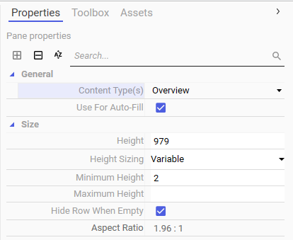
The General section now shows Content Type(s): Overview and Use For Auto-Fill: checked.
Key Concept: When you select a content type for a pane, the "Use For Auto-Fill" checkbox is automatically checked. This means at runtime, any content with a matching "Overview" content type will automatically fill this pane.
Step 14: Save and Check-in
41. In the top-left corner of the editor, click Save and Close to save and close the Main layout.
42. Click Check-in to check in the Main layout.
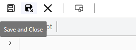
Click Save and Close to save the completed Main layout, then check it in when prompted.
Note: You will see the layout configurations in a running ViewApp in later labs.
Lab Summary
In this lab, you completed the following:
Task
Result
Created 3 graphic toolsets
Apps, .NET Controls, Training
Organized OMI Apps and .NET controls
14 apps in Apps toolset, 3 controls in .NET Controls
1. How do you create a new graphic toolset on the Graphics tab?
Right-click the Galaxy name or an existing toolset and select New → Graphic Toolset.
2. What is the default name of the first screen profile created?
ScreenProfile_001.
3. How do you add a second screen to a screen profile?
Open the screen profile in the Screen Profile Editor and click the Add Screen button (the "+" button). The new screen is added to the right of the selected screen.
4. What is the default height of a newly added pane in a layout?
It fills the available space. In this lab, we resized Pane2 to 100px by setting the Height property.
5. How do you add a slide-in pane to a layout?
Click the Add Slide-In Pane button on the edge of the layout where you want the slide-in pane to appear.
6. What happens to the "Use For Auto-Fill" checkbox when you select a content type for a pane?
It is automatically checked, enabling the pane to receive content via Auto-Fill at runtime.
7. Can a slide-in pane be set as the default pane?
No. Slide-in panes cannot be set as the default pane for a layout.